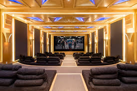
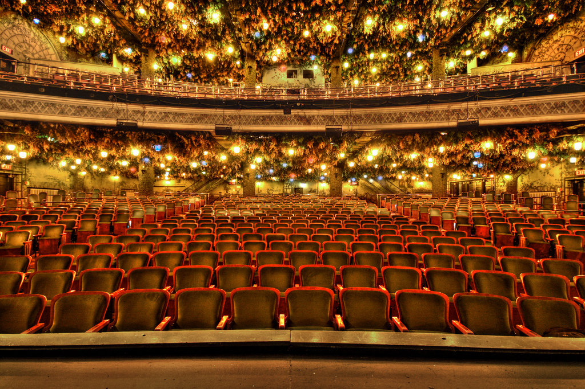

CineSMN cinemas, Pakistan's favorite cinema chain, is currently running 12 cinemas in 9 cities across Pakistan including Karachi, Lahore, Rawalpindi, Faisalabad, Gujranwala, Gujrat, Hyderabad, Sialkot and Islamabad having a total of around 7000 seats nationwide. We take pride in being Pakistan's largest cinema network committed to provide unmatched quality entertainment. At CineSMN Cinemas, We believe that be it comfort, indulgence or state of the art visual/sound is key to enhancing a customer's experience. We bring the future of cinema entertainment to your doorstep offering unsurpassed levels of service, online ticketing purchase at the comfort of your home mixed with the best digital experience. CineSMN experiences leave our customers wanting for more. Thank you for choosing CINESMN as your entertainment destination as we strive to keep providing our patrons with unlimited, non-stop family entertainment.
The Ultra Gold Experience:
CineSMN Cinemas is the leader in the concept of luxury cinemas in Pakistan. Our exclusive Ultra Gold cinemas are pure indulgence. Imagine reclining in an extra comfortable, fully reclining armchair, nibbling on delicious burgers, popcorns and candies, sipping your favorite cold beverages or coffee, and watching the latest blockbusters on the big screen - now that's luxury!

The Gold Experience:
Platinum cinemas are intimate and private with fully reclining armchairs and adjustable footrests with their own private table. Seating is tiered for unobstructed viewing and the cinema features digital surround sound and an unmatched 3D experience. An exclusive platinum lounge facility is adjacent to each cinema. The platinum lounge provides a great opportunity for corporate or community style events - or for guests who want a more intimate cinema experience. The sheer opulence and indulgence of our gold cinemas also offers unsurpassed levels of service. Get your drinks and snacks served whenever you want throughout the movie. Our menu offers a choice of food options unrivalled by any other premium cinema in the Pakistan.

The Luxury Experience:
CINSESMN screen is one of the distinguished category that CineSMN offers. It comprises of spacious VIP recliners with arm rest, side table and extra legroom, Crisp bright and 100% digital imagery laser projection with Dolby Atmos 54.1 3D surround sound technology having no content limitation with screen dimensions (24m W x 13m H) making it the biggest cinema screen of Pakistan.